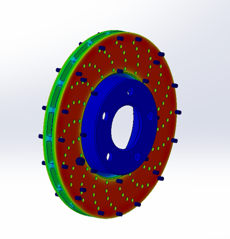
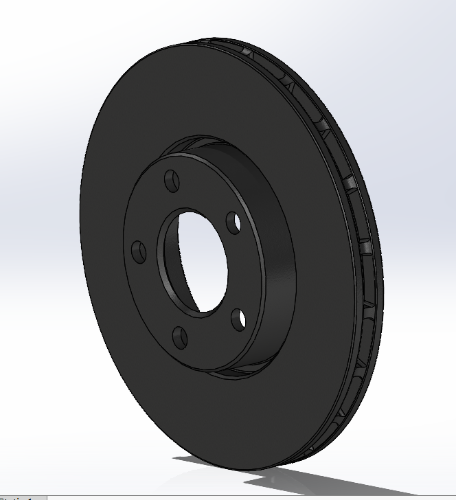
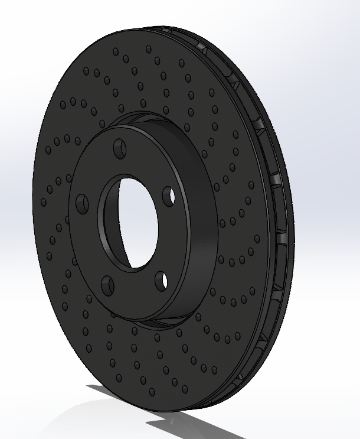
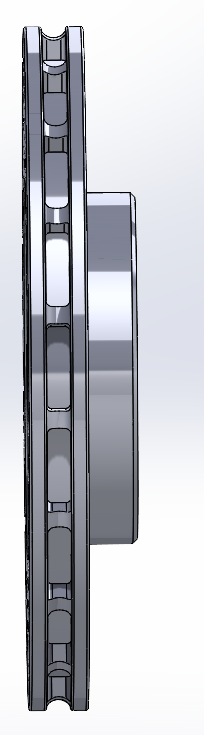
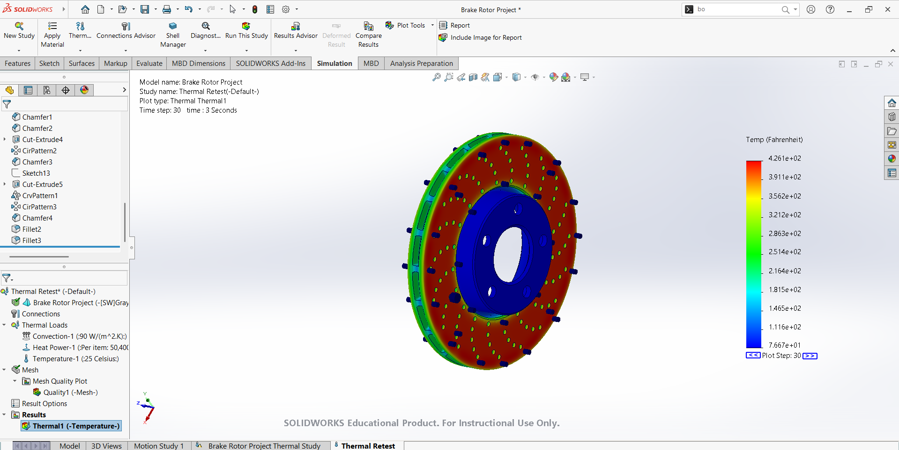

Brake Rotor Design and Thermal Analysis
Spring 2025 · Transient Thermal Analysis & Design Optimization

The inspiration behind this project came from a personal experience with my own vehicle. When I purchased my car, the brake rotors were significantly warped, causing intense vibrations through the brake pedal. This sparked my interest in digging deeper into how excessive heat buildup affects brake rotor performance and how design changes could help address these issues.
With this in mind, I conducted a transient thermal analysis of a brake rotor under a 3-second, 60–0 mph braking event representing a roughly 3,100 lb passenger vehicle. The goal was to understand how heat builds up in the rotor during rapid braking and how changes to its geometry could improve thermal performance.
Using SOLIDWORKS, I developed a brake rotor model, simulated the braking event, and evaluated design modifications to improve heat distribution and cooling performance.
I began by researching typical automotive brake rotor designs and using them as a reference to develop my initial model in SOLIDWORKS. I selected gray cast iron as the rotor material, as it is commonly used in automotive braking systems.
I then set up a transient thermal simulation over a 3-second braking interval using 0.1-second time steps to capture the rapid temperature changes throughout the braking event.

The thermal loading represented a short, high-energy braking event in which the vehicle's kinetic energy is converted into heat at the rotor. Based on background research, I applied three primary thermal conditions: approximately 18,000 W of heat input, a convective heat transfer coefficient of 90 W/m²·K to represent airflow cooling, and an initial rotor temperature of 77°F (25°C).
These conditions allowed me to evaluate the effects of rapid heat generation and convective cooling on the rotor's temperature distribution throughout the braking interval.
After running the initial baseline simulation, I analyzed the temperature distribution and identified areas of high thermal concentration. I then modified key geometric features of the rotor, including adding drilled holes and adjusting the size and configuration of the internal cooling vanes.
After each design modification, I re-ran the transient thermal simulation to compare temperature distributions and evaluate the effect of each change. This iterative process allowed me to refine the rotor geometry based on the simulation results rather than relying on the initial design alone.


The optimized rotor design reached peak temperatures of approximately 395°F during the 3-second braking simulation. Compared to the initial design, the modified geometry produced a more uniform temperature distribution and reduced localized hot spots.
Overall, this project strengthened my understanding of heat transfer principles and their application to automotive systems. It also gave me experience using transient thermal simulations to evaluate design changes, interpret temperature distributions, and develop a more thermally efficient rotor through CAD modeling and simulation-driven design.
